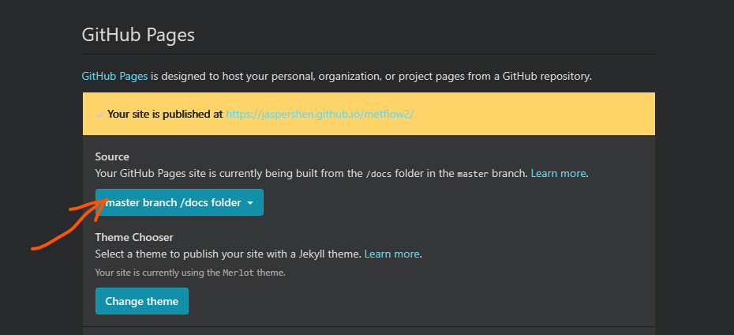

Rstudio shortcut总结
Rstudio快捷键总结,仅限于windows.
完整版可以在Rstudio Help找到.
file:///D:/software/R/RStudio/www/docs/keyboard.htm


1 Tab(标签)
| Shortcut | Function |
|---|---|
Ctrl+Shift+. |
切换标签 |
Ctrl+Tab |
切换到下一个标签 |
Ctrl+Shift+Tab |
切换到上一个标签 |
Ctrl+Shift+F11 |
切换到第一个标签 |
Ctrl+Shift+F11 |
切换到最后一个标签 |
2 Panes(窗口,窗格)
| Shortcut | Function |
|---|---|
Ctrl+1 |
光标转移到Source窗口 |
Ctrl+2 |
光标转移到Console窗口 |
Ctrl+3 |
光标转移到Help窗口 |
Ctrl+4 |
History窗口 |
Ctrl+5 |
Files窗口 |
Ctrl+6 |
Plot窗口 |
Ctrl+7 |
Packages窗口 |
Ctrl+8 |
Enviorment窗口 |
Ctrl+9 |
Viewer窗口 |
Ctrl+F1 |
版本控制Git窗口 |
Ctrl+F2 |
Build窗口 |
Ctrl+F5 |
Connection窗口 |
Shift+Alt+T |
光标转移到Terminal窗口 |
上面所有的快捷键,加上Shift之后,会最大化该窗口.
3 Files(文件)
| Shortcut | Function |
|---|---|
Ctrl+S |
保存当前文件 |
Ctrl+Alt+S |
保存所有文件 |
Ctrl+Shift+N |
新建R script文件 |
Ctrl+O |
打开文件 |
Ctrl+W |
关闭当前文件 |
Ctrl+Shift+Alt+W |
关闭除当前文件之外的所有文件 |
Ctrl+Shift+W |
关闭除所有文件 |
Ctrl+Shift+F |
在某个文件夹下的所有文件中进行搜索 |
Xiaotao Shen
Postdoctoral Research Fellow
Metabolomics, Multi-omics, Bioinformatics, Systems Biology.